Food Truck Cafe
19 November. 2026.11.18 is live on the App Store; test build 2026.11.19 (0) in TestFlight.
1Next
You
Picks (Current): the Daily Treats design; paper for the day card; the cookie book's look; the handle's knob; screenshot captions.
Strawberry cake: ChatGPT's second retouch is here.
Build: say when; today's second list is in the project only.
Me
Waiting on your picks.
2Q&A
Nothing open.
3Current
Store screenshots: four looks for the captions, for the next release. Same words; only the banner changes.

- A matches the cookie buttons. B matches the game's own cards (the arrange and tutorial banners). C covers the least of the game. D matches the new start menu.
Daily Treats: the mint card (H) is in, and three designs for its other pieces. H is in the project (no build). The designs are painted mock-ups made from the game's own cookies, paper and letters; day 1 is collected, day 2 is today, day 5 is the gift.
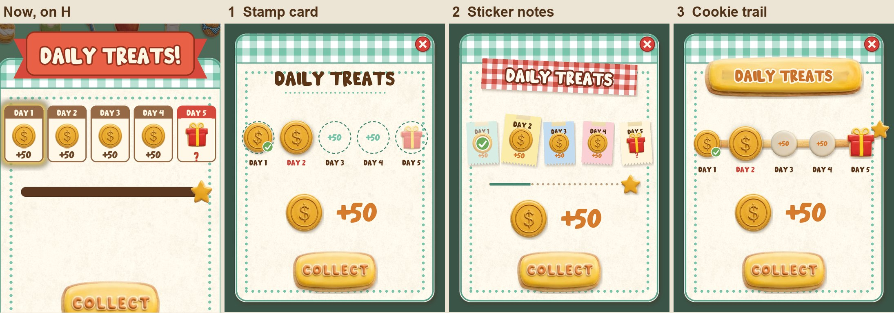
- 1 Stamp card: like a cafe loyalty card. Each day is a dashed circle; a collected day has its coin cookie stamped in with a tick, today's glows, day 5 holds the gift. No bar: the row of stamps is the progress.
- 2 Sticker notes: the title on checked tape, each day a small coloured note taped on (like the menu's stickers), today's bigger and tilted; a dotted line runs to the star.
- 3 Cookie trail: the title iced on a cookie bar, the days as cookies along a biscuit stick (the handle's stick) that ends at the star.
- All three keep the cookie coin, "+50" and the Collect cookie. Pieces can be mixed (say, 1's stamps with 2's tape title).
Paper for the map's day card and the pause menu: still to pick. Daily Treats has H (your pick). The same eight papers:
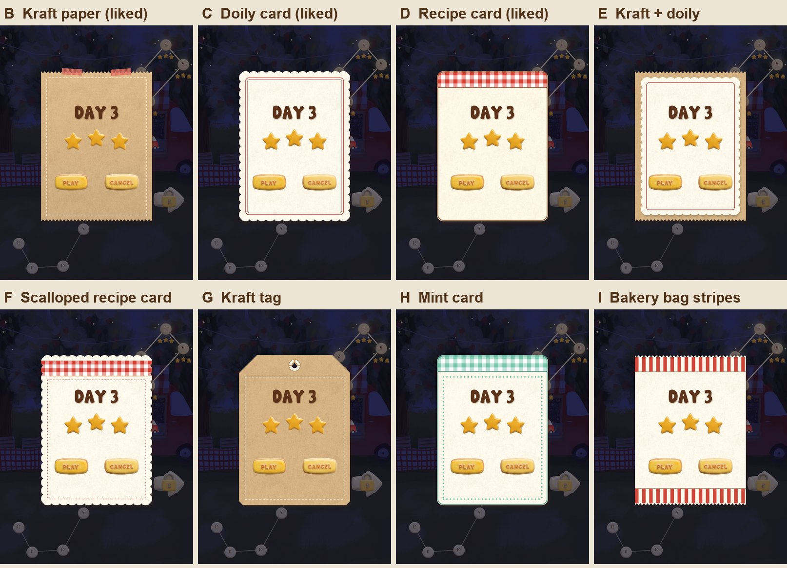
Day card (and the pause menu):
The cookie book: pages that turn, and a second round of looks.
Built (in the project, no build): four cookies in a row, sixteen to a page. A full page is followed by another; the cookie arrows under the grid turn the page, which lifts at its left edge like a book's. "1 / 2" shows where you are. The book opens on the page with the newest cookie.

Looks: the three you liked (2, 3, 4) and four more. The cookies and words get moved in from the edges for the one you pick, and the turning page takes its paper.
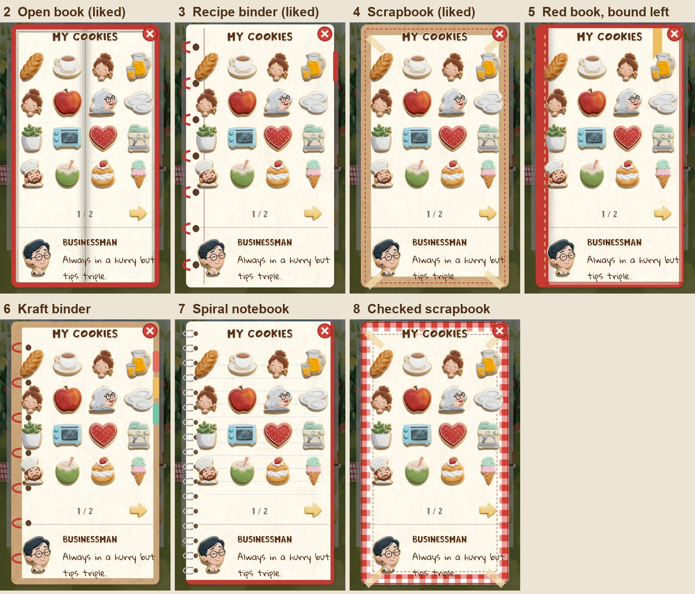
Strawberry cake: ChatGPT's second retouch, your two notes. Not in the game yet.
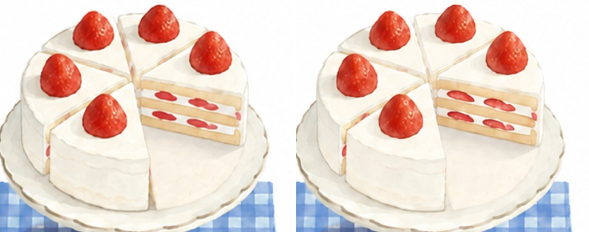
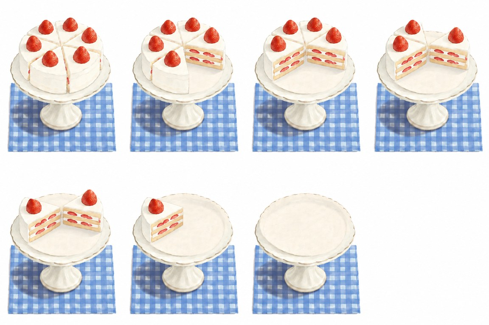
- The line left of the gap: fainter, the plate there smoother. Strawberry pieces: darker edges and a paler inside. Both changes are small; say if it needs another pass.
- ChatGPT has one picture left today (three a day on the free plan).
Pull handle: six more knobs, on the biscuit stick. By Gemini. The one in the project now is the white ring.
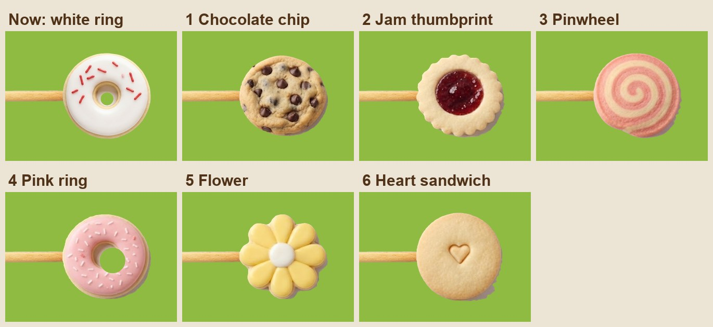
Your list of 19 November, second round. In the project, in no build (you said to wait).
Tutorial: real things are dragged. The hand takes the coffee machine across the table and puts it back; in the kitchen it takes the coffee bags down into the opening under the counter and back.
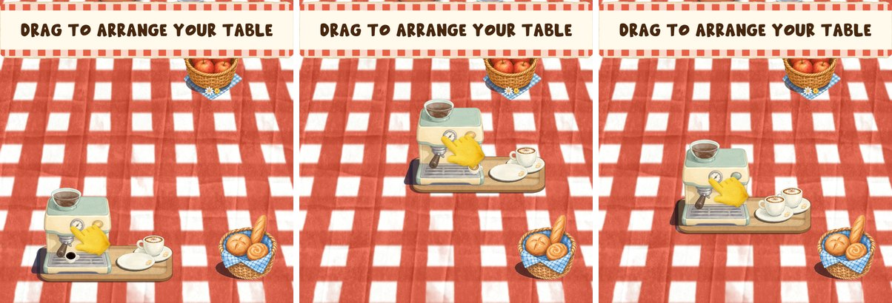
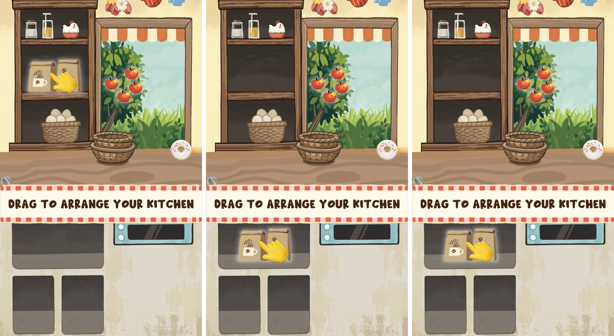
"Drag to arrange" banner on day 2 only, the first time a player arranges; never after. In the kitchen it sits lower, clear of the coffee bags and the table. The bags keep their glow while arranging.
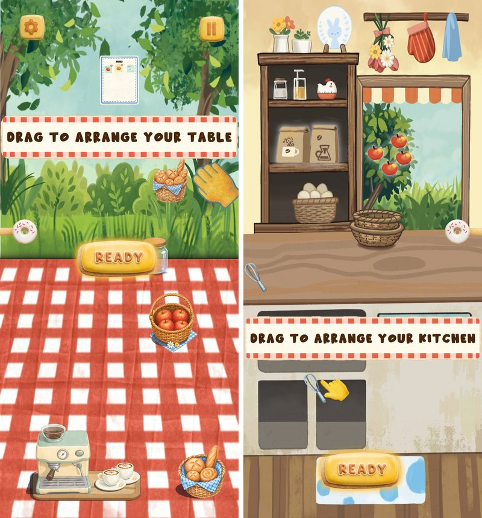
Pull handle as cookies (Gemini): a white-iced ring with red sprinkles on a biscuit stick. The table's handle can now be moved up and down at any time, like the kitchen's.
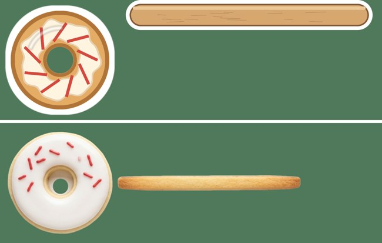
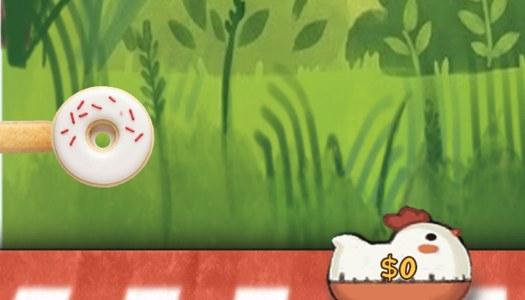
- Two stars at 80 % (8 of 10 served now gives 2 stars).
- Rating popup: Apple's own, once, when the shop opens after day 3 is finished. Apple decides whether it really shows (at most 3 times a year; never in TestFlight, so you will not see it in a test build).
- Coffee machine upgrade $650: the card's own price label still said $800 in build (0); fixed. The popup and the price charged were already 650.
4MVP
Nothing open.
5Backlog
Nothing open.
6Analysis
Nothing open.
7Marketing
Nothing open.